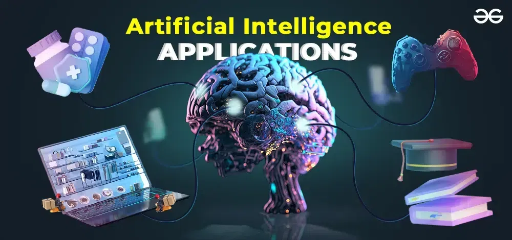

The main goal of AI is to enable machines to perceive and think like humans and solve problems as a human would. It is a broad term that includes Natural Language Processing (e.g., Alexa, Cortana), Computer vision (e.g., self-driving cars), and Robotics.
A common example is a robot that can accurately serve food to customers, deliver the right medicines to patients or perform daily chores like folding clothes, giving reminders, or making tea! AI will enable humans to interact with machines (computers) and enable newer learning mechanisms and better communication.
History of Artificial Intelligence
Although we hear more about AI and machine learning only a few years ago, these have been around for many decades. The idea of AI was first introduced around 1950 by Alan Turing, who is considered the father of computer science. He developed a test named the Turing test (or T-test), which is a measure of the intelligence of a machine when compared to a human.
In the 1970s, not much progress was seen, and the research funds started to dry up, thus stopping every possibility of further research. The main boost to AI came with the advent of big data in around 1993. By this time, computers were much more advanced and could run complex algorithms.
The first major event was a chess game in 1997 between Microsoft’s Deep blue AI-powered system and the reigning champion, where the computer won! As of today, AI is developing fast, with many areas being explored and many already functional. Most of the AI systems that are useful today are a part of narrow AI (which we will discuss shortly).
AI and Big data

AI and big data go hand in hand. Just as a child gets trained to see the outside world and differentiates between different objects and persons – colors, shapes, sizes, men, women, etc., machines can do the same when a lot of data is fed into it. This huge amount of data called big data, thus forms the basis of artificial intelligence and trains the AI system.
Important terms
1. Turing machine
.png)
It is a machine developed by Alan Turing in 1936. It is a blueprint for computation. All AI systems are tested against the Turing machine, and if their data manipulation rule sets can simulate what a Turing machine can, the systems are said to be Turing complete and rational systems. Programming languages are a good example of Turing complete systems.
2. Data Science

To perform AI, we need data that can be understood by the machine. This makes data science the most important factor for performing purposeful AI. From data collection, preparation, analysis, transformation, and pattern detection, data science helps develop truly intelligent systems. We will learn some more terms in the next few sections under different headings.
Types of AI
AI can be categorized into different types based on:
- Capabilities
- Functionality

Narrow AI (Weak AI)
.jpeg)
Narrow AI is also called weak AI and consists of systems that perform a dedicated task using their intelligence. Most of the AI systems we see today are Narrow AI. Narrow AI has limitations and cannot perform on its own beyond what it is designed for.
For example, voice-based assistants like Alexa, Cortana, and Siri are intelligent but have limitations. They can only perform certain predefined functions. Other examples of weak or narrow AI are a game of chess, self-driving cars, speech recognition, image recognition, and shopping suggestions.
General AI (Machine learning)

General AI is the type of AI in which machines are able to perform tasks with the efficiency of human beings. It is somewhat similar to supervised and unsupervised machine learning, where the machine is able to derive patterns and algorithms based on training data and can think on its own. Although many algorithms are in use as of today, no algorithm gives 100% accuracy. General AI has not yet been utilized to its full potential and is much in the research phase.
Strong AI (Super AI)
.webp)
This would be a turning point in the history of AI because, at this stage, machines will be able to think better than humans and perform complex tasks that require cognitive abilities. Super AI could be a potential outcome of general AI. Machines in this stage would be able to think, plan, reason, resolve, make decisions, learn, and communicate independently. Well, as dangerous as it sounds, there is still a long way to go to reach that level.
Reactive machines
These are the most basic types of intelligent machines, which do not store any past experiences or memories. They act upon current data for future decisions and actions; this is why the name ‘reactive’. These machines use static data. They can perform certain tasks within limits and cannot learn or improvise—for example, a game of chess. A robot designed to play chess knows a set of pre-defined moves and plays accordingly when similar situations are encountered.
Limited memory
The next step to reactive machines, is limited memory AI can store certain past data (immediate past) and act based on current data as well as data collected over some time. These machines are able to make some adjustments based on past observations and current data both.
Most of the current AI is a limited memory AI that uses a huge amount of data for deep learning algorithms. Using these algorithms, machines can classify and personalize user preferences.
Self-driving cars are a good example of limited memory AI systems. These cars can store data about traffic signals, use sensors to identify pedestrians, and store data about road conditions for better driving. Some other examples are email spam detection, image/face recognition, drones, product/movie recommendation systems, etc.
Theory of mind

Although in the theoretical stage, AI systems powered by the theory of mind will be able to communicate with human beings like human beings (in natural language) and explain their behavior or actions. These systems will be able to understand the intent of other similar systems or robots.
Theory of mind is in the research stage, and scientists are using Artificial Neural Networks (ANN) to simulate the human brain and observe how it works. ANNs then acquire new data and apply algorithms that make these systems learn.
For example, robots can recognize human emotions and mimic them. Theory of mind AI will enable social interaction between humans and robots and create a world where robots and humans will co-exist! This could be particularly useful for people who live alone or sick or elderly persons who need assistance. A recent Malayalam movie Android Kunjappan Version 5.25, shows a glimpse of this concept.
Self-aware AI

Self-aware systems are an extension of the theory of mind, where the system can make certain decisions on its own, which may conflict with the initial instructions given to it. For example, a robot goes grocery shopping and notices an item XYZ that is not on the list but would be useful if he buys it.
He sees that there are offers on purchasing XYZ items and hence decides to buy the item – just like a human would do. These systems are going to be super intelligent and have emotions, consciousness, and self-awareness. This type of AI is in a hypothetical stage and will take a long time to become a complete reality.
Applications of AI
There are already many applications of AI in different fields. The best examples are chatbots and robots, which have been helping a lot of people, especially during the lockdown period. Chatbot: Chatbots can solve common customer queries using a set of pre-programmed questions. This helps customer care executives to resolve queries in a more efficient and faster manner. Robotics: Robots help in hospitals by delivering medicines to patients.
Drones are dropping food packets in areas affected by natural calamities, containment zones due to numerous COVID-19 cases, and so on. Speech recognition: Systems like Alexa, Siri, and Cortana recognize natural language, process it, and respond to the questions posed by the speaker in the best possible manner.
Self-driving cars: As we discussed before, these cars store a large amount of data to derive driving decisions. Self-driving cars use the computer vision technology of AI. To know more about these applications, and read about many other AI applications, read our article on Artificial Intelligence technologies
Feedback
- Send your Feedback to nigammishra826@gmail.com